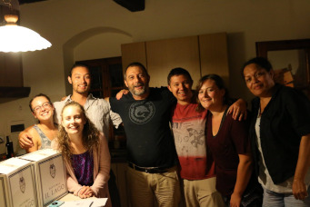

Welcome to SuperRestaurant where our food is super, and you would feel duper. Quality and service is our priority. Our Quality is the best on the block, and where would you eat other than here! Why dine with a clown? Why dine with a king? How about you dine with someone somewhere in between. Do not forget to check out our deals! Who knows, you will definitely get a bang for your buck with our prices and deals. Our Italian style restaurant will make you feel like you are visting Antonio's hometown of Turin, Italy!
Drop by soon! Our team would love to see you!
About Us!
Born in Turin, Italy, Chef Antonio Pastrini had a love for cooking since he was 6. He was building his cooking brand in Turin, Roma, and Bergamo. He was known around those areas as prodigy chef, and wanted to reach more areas besides his home country. When he turned 19, He moved to the United States after saving enough funds. Before going there, he learned about the south and the foods they had there, and traveled to state of Georgia.
While in Georgia, he stopped in Macon. He stumbled apon the city because he needed gas. He decided to stay for a few days before he wanted to settle down. Little did he know that would be his place for years to come. When he was 22, he wanted to own a restaurant like his grandfather. He scapped his original idea of a southern style restaurant. Antonio wanted to show his Italian culture. He wanted to show Macon, and surrounding counties that there is more to Italian culture than just wine and pizza.
"If Grandpa Pastrini seen how Italy was portrayed here... He would spit on them, so I needed to do something about it." - Antonio Pastrini on the city of Macon in the Turin Daily Newspaper.
When he was 25 he was given funds from his grandpa and his father to start a restaurant. Antonio was a man of his word and attempt to carry on his family's lineage.